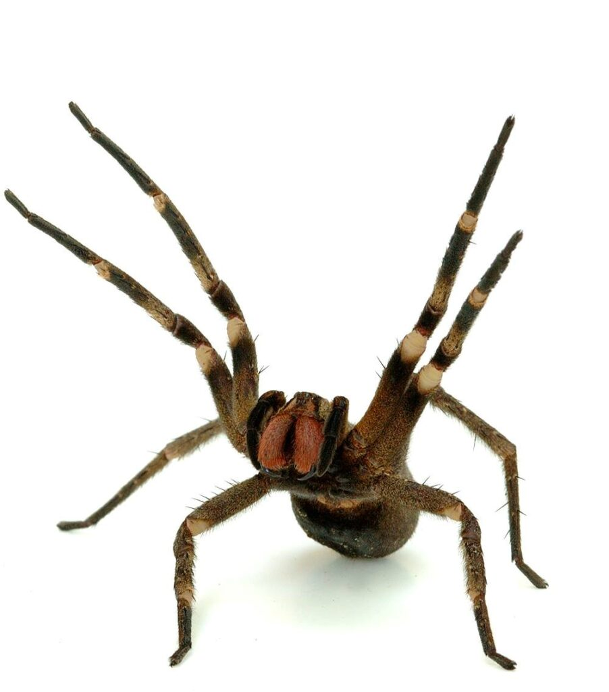
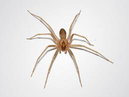
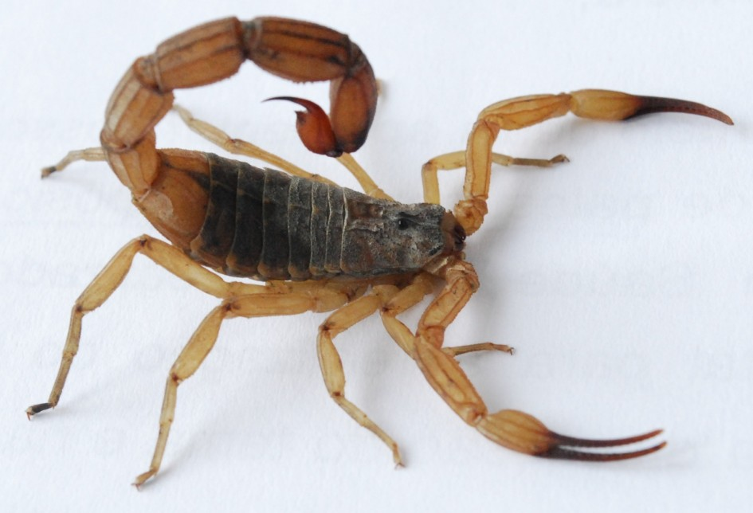

🐍 Sobre nós 🐍
No Poisonous Life, nossa missão é levar informação confiável e acessível sobre os animais peçonhentos mais perigosos do Brasil e do mundo. Sabemos que o desconhecido muitas vezes gera medo — por isso, acreditamos que o conhecimento é a melhor forma de prevenção e respeito à natureza. Somos apaixonados pela vida selvagem e fascinados pelas criaturas que, apesar de assustadoras, desempenham papéis fundamentais nos ecossistemas. Nosso conteúdo é voltado para conscientizar, educar e alertar sobre os riscos, características e curiosidades desses animais, sempre com responsabilidade e embasamento científico. Aqui, você encontrará artigos, dicas de segurança, mitos desvendados e atualizações sobre as espécies mais relevantes. Nosso objetivo é que cada visita ao nosso blog seja uma oportunidade de aprender e também de valorizar a diversidade natural que nos cerca. Seja bem-vindo(a) à nossa comunidade! 🕷️🦂🐍 Conheça, respeite e proteja.
😲 Animais em alerta atualmente na sua região 😲
Aranha Armadeira
A armadeira (Phoneutria sp.) é uma das aranhas mais temidas do Brasil, conhecida por seu comportamento agressivo e veneno potente. De tamanho grande, pode chegar a até 15 centímetros de envergadura, com corpo e pernas cobertos por pelos. Seu nome vem do hábito de levantar as patas dianteiras em posição de ataque quando se sente ameaçada. Ela é encontrada principalmente em florestas, plantações e até em áreas urbanas, escondida em sapatos, roupas ou entre folhas. Apesar de seu veneno ser forte, casos graves de acidentes são raros, pois ela só ataca em legítima defesa.
Aranha Marrom
A aranha-marrom (Loxosceles sp.) é uma pequena aranha venenosa encontrada principalmente no Brasil. Mede cerca de 1 a 4 centímetros e é reconhecida por sua coloração marrom-amarelada e por uma marca em forma de violino em seu dorso. Apesar de ser tímida e evitar contato com humanos, sua picada pode ser perigosa, causando ferimentos graves como necrose da pele. Ela costuma se esconder em lugares escuros e tranquilos, como atrás de móveis, roupas guardadas e sapatos. Por isso, é importante manter a casa limpa e sacudir roupas antes de usá-las para evitar acidentes.
Escorpião Amarelo
O escorpião-amarelo (Tityus serrulatus) é considerado o escorpião mais perigoso do Brasil. De cor amarelada e tamanho pequeno — geralmente entre 6 e 7 centímetros —, ele se adapta muito bem a ambientes urbanos, escondendo-se em entulhos, ralos e frestas. Seu veneno é potente e pode causar dor intensa, vômitos e até risco de morte, especialmente em crianças e idosos. Diferente de outros escorpiões, o amarelo consegue se reproduzir sem precisar de um parceiro, o que facilita sua rápida expansão nas cidades. Por isso, é essencial manter os ambientes limpos e vedar possíveis esconderijos para evitar acidentes. 
📑 Contato 📑
💥 Profissionais para Detetização 💥
Anderson Costa
Especialista em controle de aranhas e escorpiões com mais de 10 anos de experiência. Atua na detetização residencial e comercial garantindo ambientes seguros e livres de riscos.
(53) 99987-6541
Bruno Lima
Profissional certificado em manejo integrado de pragas, com foco em prevenção e tratamentos seguros. Atendimento rápido e eficaz na sua região.
(53) 99190-7677
Galeria de Relatos
💬 Comentários 💬
João Silva
Fui picado pela aranha armadeira durante uma trilha. Foi muito assustador, senti muita dor e precisei ir ao hospital para tomar o soro antiofídico. Hoje tomo mais cuidado, mas aprendi muito com essa experiência.
Maria Oliveira
Uma aranha marrom me picou dentro de casa. No começo, parecia só uma irritação, mas depois a ferida piorou bastante. Graças à ajuda médica, me recuperei bem, mas foi um susto enorme.
Julio Santos
O escorpião amarelo me atacou quando eu estava mexendo no quintal. A dor foi imediata e intensa, precisei ser atendido rapidamente. Hoje sempre uso luvas e calçados fechados para evitar novos acidentes.
📸 Galeria de Animais Perigosos & Tabela de Riscos
| # | Espécie | Tipo | Periculosidade |
|---|---|---|---|
| 1 | Aranha Armadeira | Aranha | Alta |
| 2 | Aranha Marrom | Aranha | Média-Alta |
| 3 | Escorpião Amarelo | Escorpião | Alta |